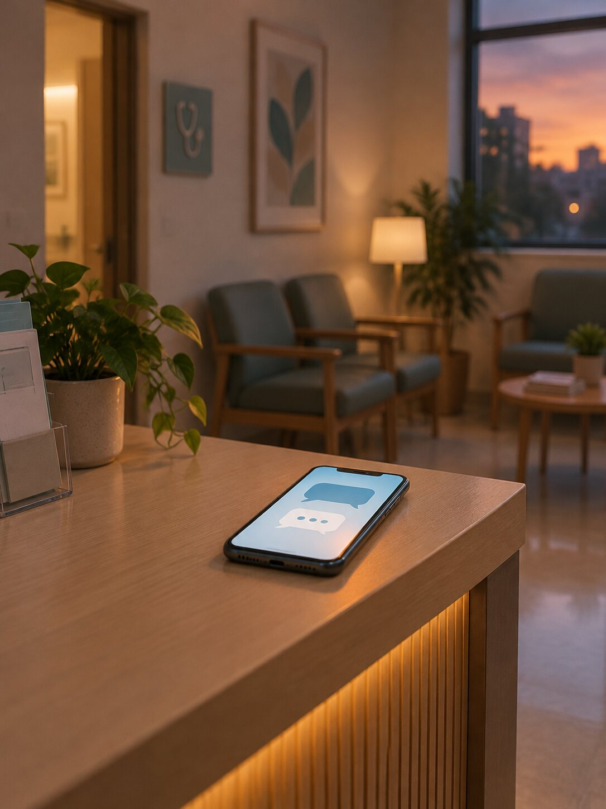

אחרי 16:00, מי עונה לוואטסאפ של הקליניקה?
המזכירה מסיימת את יום העבודה איפשהו אחרי 16:00. הטלפון מושתק, האורות נכבים, ואפשר לסגור את הרשימה של היום. רק שהלקוחות שלכם לא סוגרים את שלהם. ההודעות ממשיכות להגיע: בערב, בלילה, בסוף השבוע. השאלה היא לא אם הן מגיעות, אלא מה קורה להן אחרי שהן מגיעות.

שעות המזכירה מול שעות הלקוחות
רוב הקליניקות עובדות בשעות מסודרות, בערך בין 8:00 בבוקר ל-16:00 או 17:00 אחר הצהריים. אבל האדם שצריך תור? הוא בעבודה עד 18:00. אחרי שעה שהוא מסדר את הילדים, מכין ארוחת ערב וסוף סוף יושב לנשום, הוא פותח את הוואטסאפ בשמונה וחצי בערב ושולח הודעה: כמה עולה טיפול? אפשר תור השבוע? ולפעמים גם הקלטה קולית של דקה וחצי, כי להקליד אין כוח אחרי יום כזה.
זו לא בעיה של פעם בחודש. הערב, הלילה וסוף השבוע הם בדיוק החלונות שבהם אנשים פנויים לטפל בעניינים האישיים שלהם, וקביעת תור היא עניין אישי קלאסי. בדיוק בשעות האלה, אין אף אחד בצד השני שיענה.
מה קורה בדרך כלל להודעה שנשלחת בערב
בקליניקה טיפוסית, ההודעה מחכה בתור עד הבוקר. בבוקר המזכירה פותחת את הוואטסאפ ומוצאת ערימה: פניות של מטופלים קיימים, בקשות לשינוי תורים, ובין לבין שני לקוחות פוטנציאליים חדשים. היא מתחילה לעבור עליהן אחת אחת, ומקווה שאף אחת לא תתפספס בדרך.
לבן אדם ששלח את ההודעה ב-20:30 יש בינתיים עוד אפשרויות. עד שענו לו ב-10:45 למחרת, יכול להיות שהוא כבר התקשר לקליניקה אחרת שענתה מיד, ויכול גם להיות שפשוט עברה לו ההתלהבות. הכי מתסכל בזה? אי אפשר לדעת כמה פניות אבדו ככה, כי הודעה שלא נענית לא משאירה עקבות.
איך סוכנת וואטסאפ חכמה מטפלת באותה פנייה
רותי, סוכנת הוואטסאפ שבנינו לקליניקות ולעסקי טיפולים, עונה לכל הודעה תוך שניות, בכל שעה, גם בלילה וגם בשבת.
נחזור להודעה של 20:30. הפעם המענה מגיע מיד: בוקר טוב, איזה טיפול מעניין אתכם? השולח עונה, ובוחר מועד מתוך הזמנים הפנויים ביומן. התור נקבע בזמן אמת, בלי התנגשויות, נשמר אוטומטית ב-CRM, ויום לפני המועד יצא לו תזכורת. אם ההודעה היא הקלטה קולית, רותי מתמללת אותה לטקסט בעברית ועונה לפי התוכן.
ולכם, בעלי הקליניקה, נשלחת התראה מיידית רק כשמשהו באמת דורש בן אדם: מקרה דחוף, שאלה רפואית, או פנייה חריגה. כל השאר מסודר כבר בבוקר, כשאתם פוגשים לידים עם סטטוס במקום ערימת הודעות.
ההבדל המעשי פשוט: באותו ערב, במקום עוד הודעה שמחכה לבוקר, יש תור סגור ביומן ותזכורת שכבר תצא מעצמה. המזכירה מתחילה את הבוקר ממקום של סדר, והלקוח הפוטנציאלי עוד חם ולא הלך לחפש מענה במקום אחר.
ואם אין לכם מזכירה בכלל?
הרבה קליניקות קטנות עובדות בלי מזכירה: המטפל עונה לוואטסאפ בעצמו, בין מטופל למטופל או בשעה שהוא אמור לנוח. זה מסתיים באחת משתי דרכים רעות: או שהמטופל שמולכם מקבל פחות תשומת לב, או שהמטופל שבצד השני של הוואטסאפ מחכה שעה או יומיים. סוכנת וואטסאפ פותרת את שני הצדדים ביחד: היא עונה מיד לכל פנייה חדשה, ואתם ממשיכים לטפל.
תוספת למזכירה, לא תחליף
חשוב לנו להיות ברורים: רותי לא מחליפה את המזכירה. היא מוסיפה שכבת זמינות שאף מזכירה לא יכולה לתת, מחוץ לשעות העבודה ובשיאי העומס. שאלות רפואיות לא נשארות אצל הסוכנת: הן מועברות ישר אליכם או לצוות המקצועי, עם התראה. המטרה היא שהאנשים בצוות יתמקדו במטופלים שמולם ובמקרים המורכבים, ושאף פנייה לא תתפספס רק בגלל השעה שבה היא הגיעה.
למה דווקא קליניקות ועסקי טיפולים
קליניקות, מכוני יופי ומרפאות פיזיותרפיה חיים מתורים. כל פנייה שלא נענית היא תור שאולי לא יקבע, וכל תור שלא נקבע הוא הכנסה שלא קרתה. בדיוק לעסקים כאלה בנינו את רותי, עם חיבור ליומן, CRM ותזכורות מובנים, כדי שהעסק יענה ללקוחות גם כשאתם ישנים.
מה עושים עכשיו
אם הנושא הזה מוכר לכם, שווה שיחה קצרה: 20 דקות על התפעול היומיומי שלכם, ובתוך 24 שעות תקבלו הצעת מחיר מסודרת. בשיחה נבין יחד מי עונה היום ללקוחות, מה מוקלד ביד ואיפה נופלות פניות, ומשם נחליט אם סוכנת וואטסאפ היא הכלי הנכון לכם. בלי התחייבות ובלי הפתעות בהמשך. שלחו לי הודעה בוואטסאפ ואחזור אליכם באותו יום.
רוצים שהעסק יענה גם אחרי 16:00?
שיחת 20 דקות על התפעול היומיומי שלכם, ובתוך 24 שעות הצעת מחיר מסודרת. בלי התחייבות.
שלחו הודעה בוואטסאפ